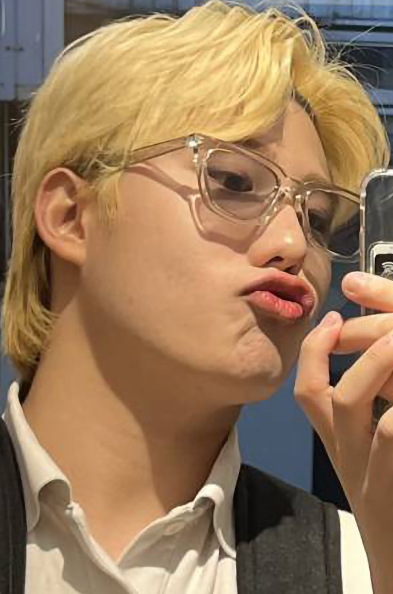

비전공자의 당돌함
미용을 전공했지만, 습진으로 인해 다른길을 찾다
개발자의 길을 선택하였습니다.
학원에서 python,c언어,java를 배우고
학원 팀원들과
웹 프로젝트를 함께 하였습니다.
처음 언어를 배우면서 흥미를 느꼈고,
팀원들과 함께
웹 프로젝트를 만들면서 즐거움과 뿌듯함을 느꼈습니다!
앞으로도 더 많은 경험을 통해 완성도 높은 포트폴리오를 작성하고,
취업에 성공하고 싶습니다!
블로그:  포트폴리오:
포트폴리오: 
포트폴리오:
김호진
23살
ESFP
⭐나의 장점⭐
다양한 서비스 직종 근무 경험이 있어 원활안 커뮤니케이션이 가능합니다!
또 긍정적인 에너지로! 팀의 분위기를 살리기 위해 노력합니다!
⭐협업 스타일⭐
문제가 발생하면 팀원들과 소통하고 문제를 해결하려고 합니다!
또 팀원들과의 대화를 통해 서로 다양한 정보를 공유하려 노력합니다.